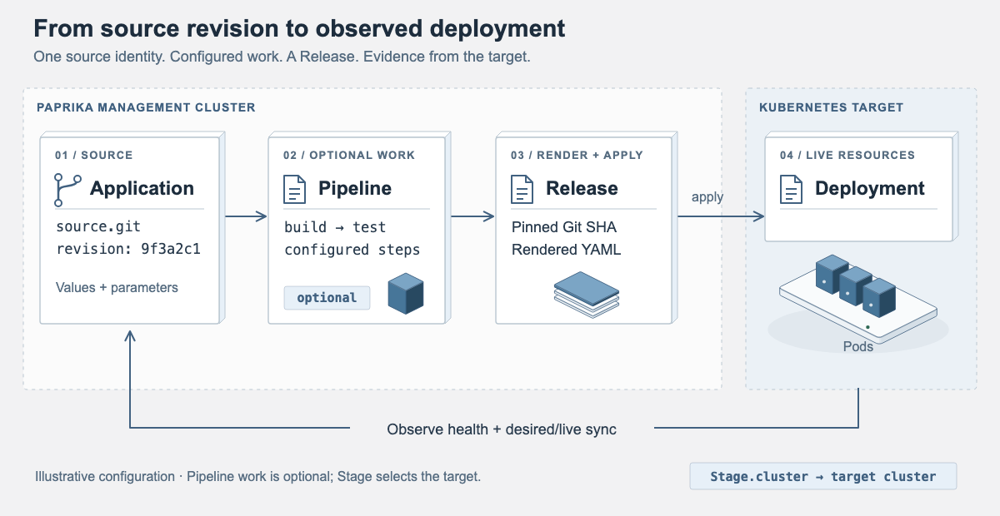

Paprika concepts and feature guide
Understand Applications, Templates, Pipelines, Stages and Releases, then find the guide for your delivery or observability task.
Paprika is an Apache 2.0 Kubernetes application delivery project with progressive rollouts, multi-cluster management and an observability workspace. Applications, Templates, Pipelines, Stages and Releases record the delivery lifecycle. The project is early-stage; use a non-production cluster for your first evaluation.


Choose a starting point
| Your task | Start here | What to verify |
|---|---|---|
| Deploy your first application | Getting started | Operator readiness, the created Release and workload health. |
| Promote a tested revision | Environment promotion | Upstream revision, verification results, target settings and candidate approval. |
| Investigate a changed or unhealthy workload | Drift and prune | Desired/live differences and resource health are separate observations. |
| Build a dashboard with your telemetry | Dashboard examples | Provider mappings, query bindings, fresh samples and the rendered layout. |
| Connect an agent to delivery or observability | Fleet plugin or Observe plugin | The selected endpoint, OAuth scopes and an actual authorized read. |
The CLI is a client for an existing Paprika API. Installing it does not install the Kubernetes operator. Likewise, installing a plugin does not deploy its MCP server or complete OAuth sign-in. Follow the corresponding setup guide before running commands against a server.
Core Concepts
| Feature | Description | Guide |
|---|---|---|
| Application CRD | Top-level resource that models a deployable application, its source, stages, sync policy, and health checks. | Getting Started |
| Template Sources | Render manifests from Helm charts, Git repositories, S3 objects, OCI artifacts, or inline bundles. | Getting Started, API Reference |
| Pipelines | CI-style workflows defined as Kubernetes Jobs with steps, dependencies, artifacts, and retries. | Pipeline Guide |
| Stages | Environment definitions (dev, staging, production) with ring numbers, cluster refs, canary config, and gates. | Getting Started, Canary Guide |
| Releases | Promotion lifecycle through stages with verification and rollback support. | Getting Started |
Progressive Delivery
| Feature | Description | Guide |
|---|---|---|
| Canary | Weighted traffic shifting with configurable steps, intervals, and automated analysis. | Canary Guide |
| Environment promotion | Select a completed upstream release's pinned revision, verify the upstream environment, and retain separate target settings and approval for each Application. | Promotion Guide |
| Multi-cluster | Automatically onboard remote state through outbound satellites, merge shared app placements, and deploy through Stage-level cluster connections. | Multi-cluster Guide |
| Gates | Automated smoke-test and duration gates plus manual approval gates. | Gates Guide |
| Health Checks | CEL-based and HTTP-probe health evaluations for applications and resources. | Getting Started |
| DeepHost delivery | Git-sourced Helm delivery of a Kubernetes hosting platform with staged promotion, router health checks, rollback, and shared Envoy integration. | DeepHost Integration |
Drift and Lifecycle
| Feature | Description | Guide |
|---|---|---|
| Drift Detection | Label-selector diff engine comparing desired manifests against live state with API-group-aware resource keys and Kubernetes-default omission. | Drift and Prune |
| Pruning | Opt-in garbage collection of stale resources after apply, with prune protection annotations and cluster-scoped kind allowlists. | Drift and Prune |
| Prune Preview | status.prunableResources lists what would be pruned before enabling prune. |
Drift and Prune |
| Sync Waves | paprika.io/sync-wave (or Argo CD's argocd.argoproj.io/sync-wave) orders sync-phase resources into waves; each wave is health-gated before the next applies, bounded by hookTimeoutSeconds. |
Operations |
| Server-Side Validate | syncOptions.serverSideValidate dry-run applies the rendered manifests through admission before workload mutation. A successful preflight does not make later multi-resource apply atomic. |
Operations |
| Selective Sync | SyncResources re-applies only named resources of the current release, with dry-run selector validation and selective prune. |
Operations |
| ApplicationSet Rolling Sync | strategy.type: RollingSync rolls template changes across generated apps in labeled, health-gated batches with maxUpdate budgets; status.rollingSync exposes the active step, pending apps, and the blocking app. |
Operations |
| Resource Patching | ApplyResourcePatch patches app-managed resources with mandatory dry-run preview + unified diff; restart_workload MCP tool wraps it for rolling restarts. IgnoreDriftedField manages scoped ignore-difference rules. |
Operations |
Observability
| Feature | Description | Guide |
|---|---|---|
| Drift Metrics | paprika_out_of_sync and paprika_prunable gauges updated on every diff evaluation. |
Metrics and Alerting |
| Prune Metrics | paprika_prune_total counter per application and kind. |
Metrics and Alerting |
| OTel Metrics | Render, git, auth, SSE, and event metrics via OpenTelemetry with Prometheus export. | Metrics and Alerting |
| Observability Gateway | Second MCP surface at /observe/mcp for querying logs, metrics, and traces through pluggable ObservabilityProvider connectors (Prometheus, Loki, Tempo, OTLP), with its own paprika:observe scope and token audience. |
Observability Gateway |
| Insights dashboards | Compose widgets, reuse saved queries, bind dashboard variables, and import examples with explicit mappings to live providers. | Dashboard Examples |
| Observe authoring | Create or update shared saved queries and dashboards through MCP with explicit paprika:insights:write consent, existing Insights write permission, and exact ETags for edits. |
Observe Plugin |
| Visual verification | Optional private browser worker captures actual saved dashboards and focused widget inspectors; use live queries separately to check values and freshness. | Browser Renderer |
Interfaces
| Feature | Description | Guide |
|---|---|---|
| Dashboard | Built-in web UI served on port 3000 with live SSE updates. |
Dashboard Guide |
| CLI | Cobra-based paprika CLI for listing resources, syncing apps, and approving gates. |
CLI Guide |
| API | Connect-RPC service paprika.v1.PaprikaService for programmatic access. |
API Reference |
| Codex and Claude plugin | Authenticated MCP tools for fleet inspection, app health, drift, workload logs, and delivery actions, with an interactive console and app mentions in supporting hosts. | Plugin Installation and Usage |
Security
| Feature | Description | Guide |
|---|---|---|
| Auth | Basic auth and OIDC bearer token authentication on the API/UI. | Auth Guide |
Next Steps
- New to Paprika? Start with Getting Started.
- Want to automate deployments? Read the CLI or API guides.
- Working in Codex or Claude? Install and use the Paprika plugin.
- Building dashboards through MCP? Connect Paprika Observe.
- Moving a tested revision between environments? Read Environment Promotion.
- Need progressive delivery? See Canary and Gates.
- Running across clusters? See Multi-cluster.
- Delivering DeepHost? See DeepHost Integration.
- Managing drift and stale resources? See Drift and Prune.
- Setting up monitoring? See Metrics and Alerting.
- Building and deploying Paprika itself? See Operations.